SECON & eGISEC은 아시아 최대 규모 통합보안 전시회로서, AI시대의 핵심인 보안산업의 현재를 조망하고 나아가 미래를 예측할 수 있는 비즈니스 플랫폼으로 자리매김한 행사이다.
제 24회 세계보안엑스포(SECON) 참석 후기
1. Ahnlab
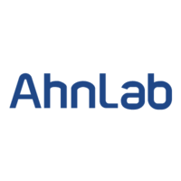
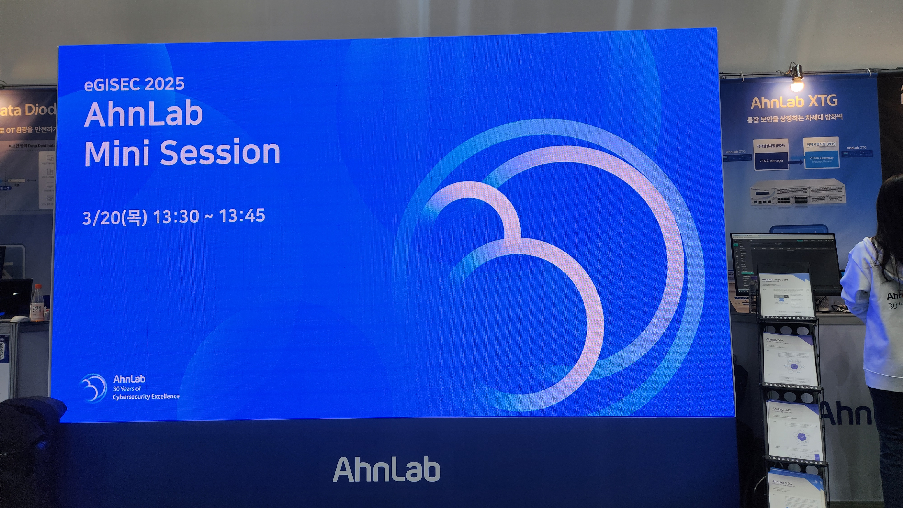
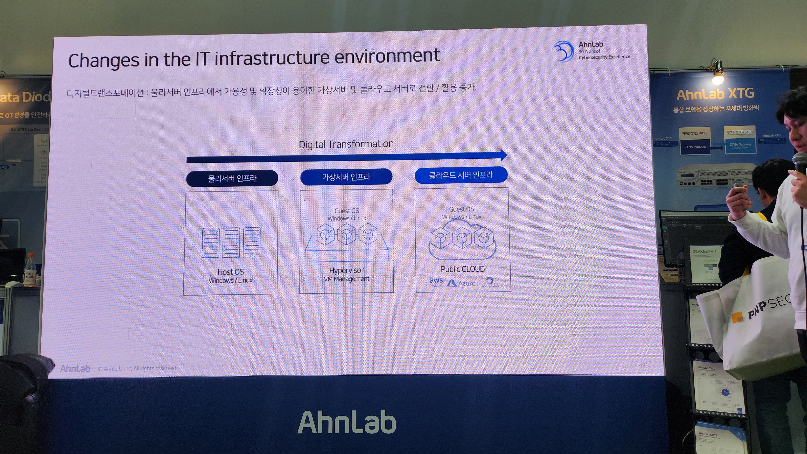
[Ahnlab 부스 방문 후기]
제가 가장 먼저 방문했던 부스는 "Ahnlab"의 부스입니다.
안랩의 부스에서는 미니세션을 진행중이였고 미니세션의 내용은 클라우드 기반의
XDR 플랫폼으로, 사내에서 운영 중인 보안 솔루션이나 이메일 및 다양한 시스템에서
생성되는 로그를 분석하여 효과적으로 관리 할 수 있도록 지원하는 기술을 발표중이였습니다.
저는 제대로 이해는 못했지만 확실히 보안쪽으로 기술력이 높은 기업이다 보니 보안쪽에서 흥미롭고
보다 안정성 있는 개발을 하는 것 같아 흥미롭게 세션에 참여했습니다.
↓ 추가로 세션 종료후 퀴즈쇼에서 경품도 탔습니다👍 ↓
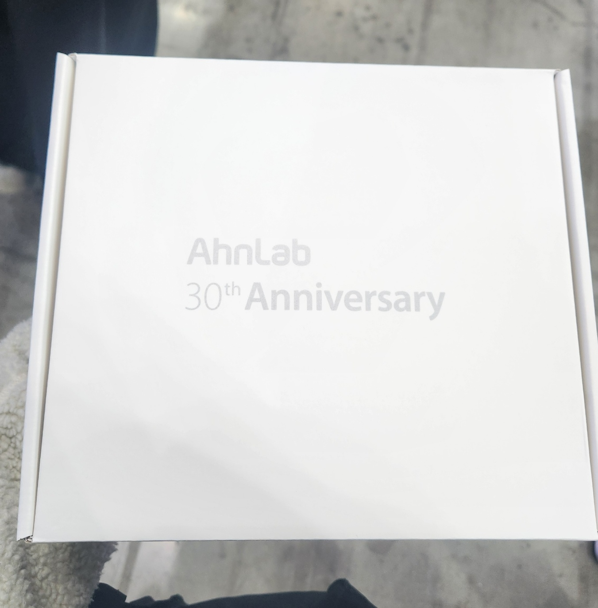
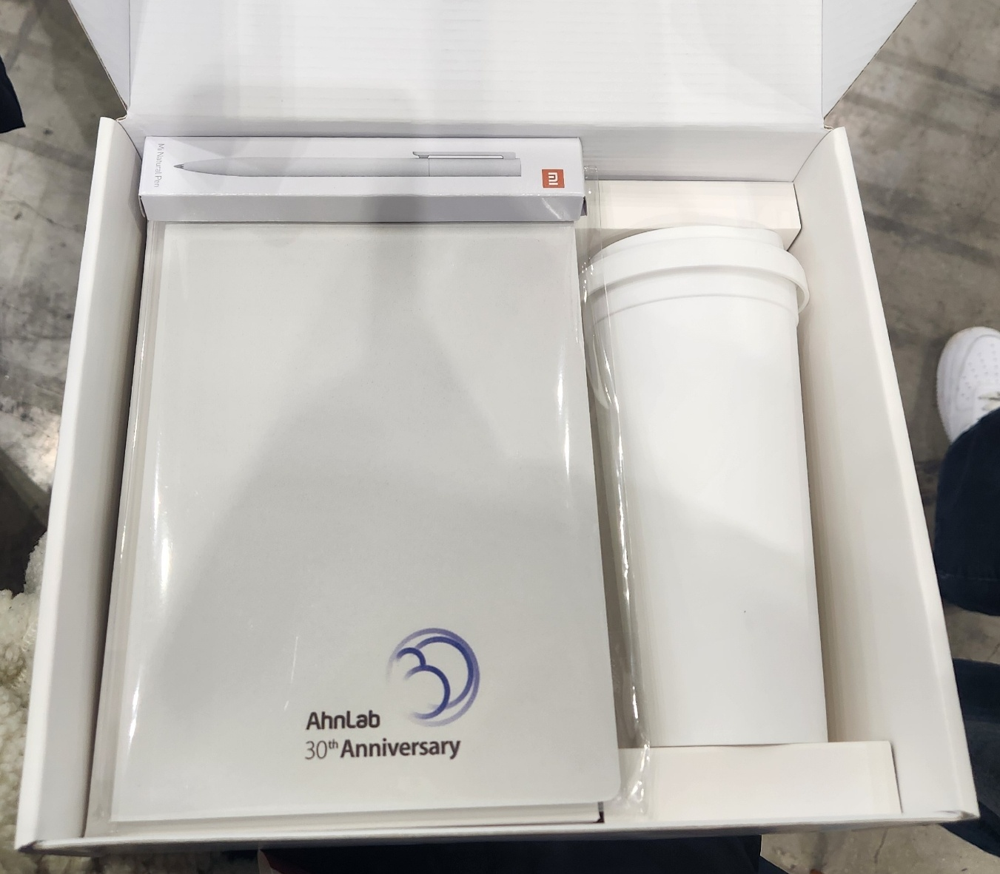
2. SK shieldus
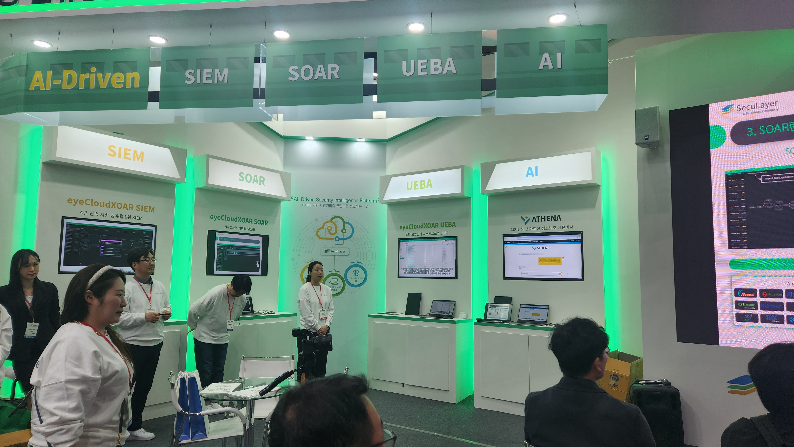
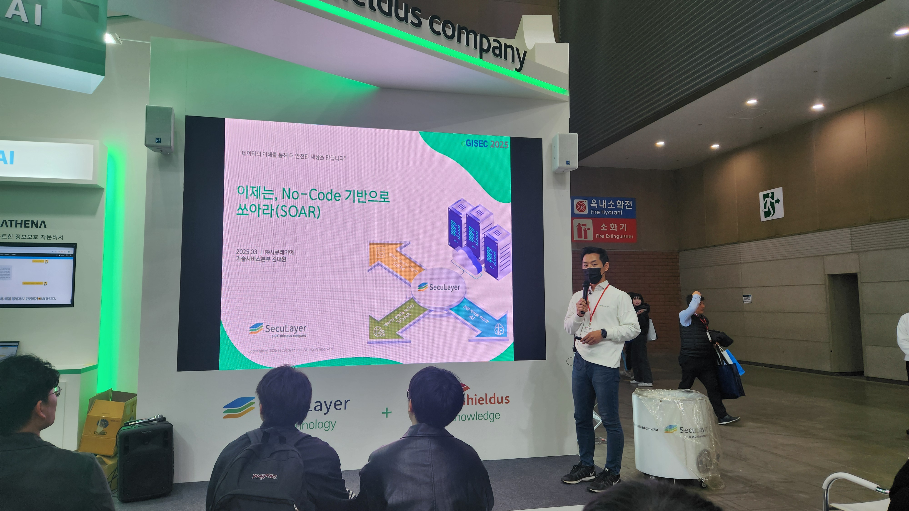
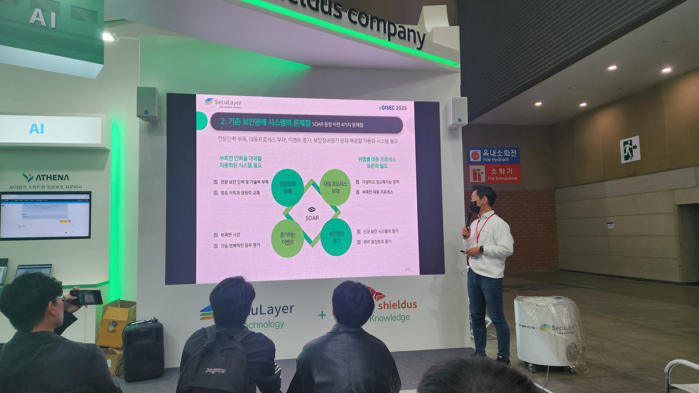
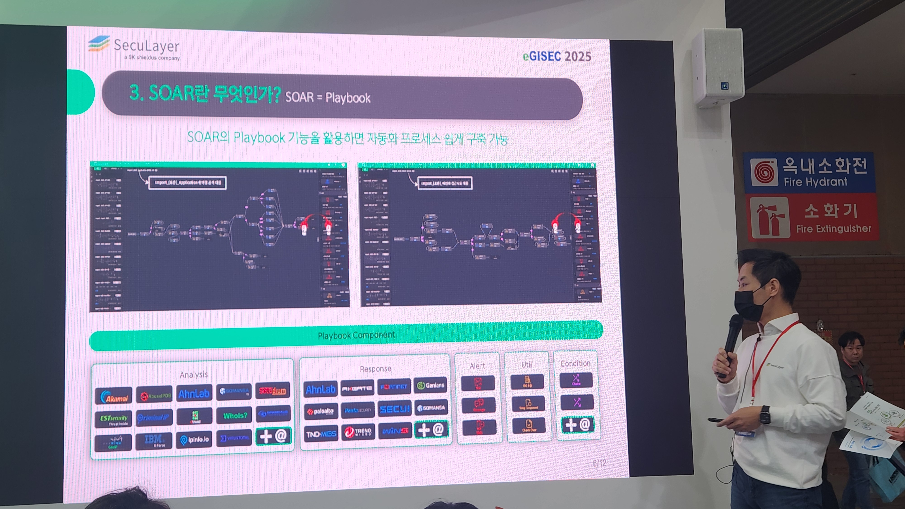
[Sk shieldus 부스 방문 후기]
제가 두번째로 방문했던 부스는 "Sk shieldus" 의 부스입니다.
Sk shieldus의 부스에서는 기존 보안관제 시스템의 문제점을 제시하고
노 코드 기반으로 자동화 프로세스를 구축하는 SOAR 라는 시스템을 소개했습니다.
저는 전부터 sk shieldus 에 관심이 있었지만 이번 세션을 보면서 노 코드 기반으로 손쉽게
보안 관제 프로세스를 구축 할 수 있다는 것에 큰 흥미로움을 받았고 이번 SECON 부스들 중
가장 즐겁게 봤던 기억이 남습니다.
3. 기타 추가적인 부스들
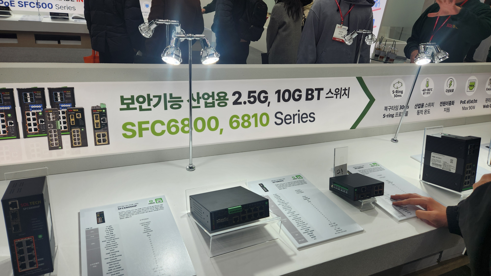
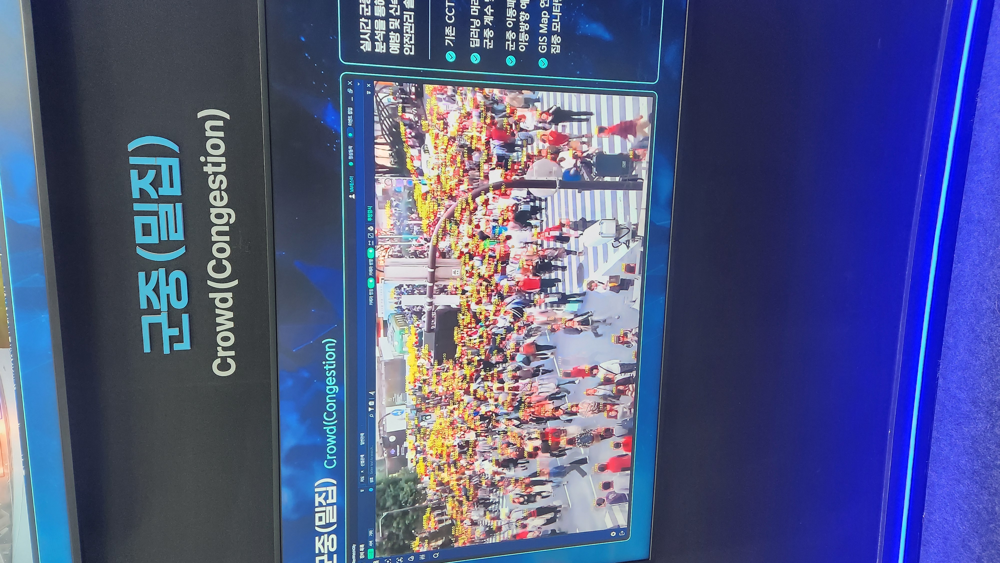
[기타 부스 방문 후기]
부스들 중에서는 switch 관련 부스들도 있었으며
CCTV 등 카메라를 통해 군중에서 많은 얼굴들을 인식하여
구별하는 기술 등 여러가지의 부스들을 관람했습니다.
4. SECON 참여 인증과 참석 후기
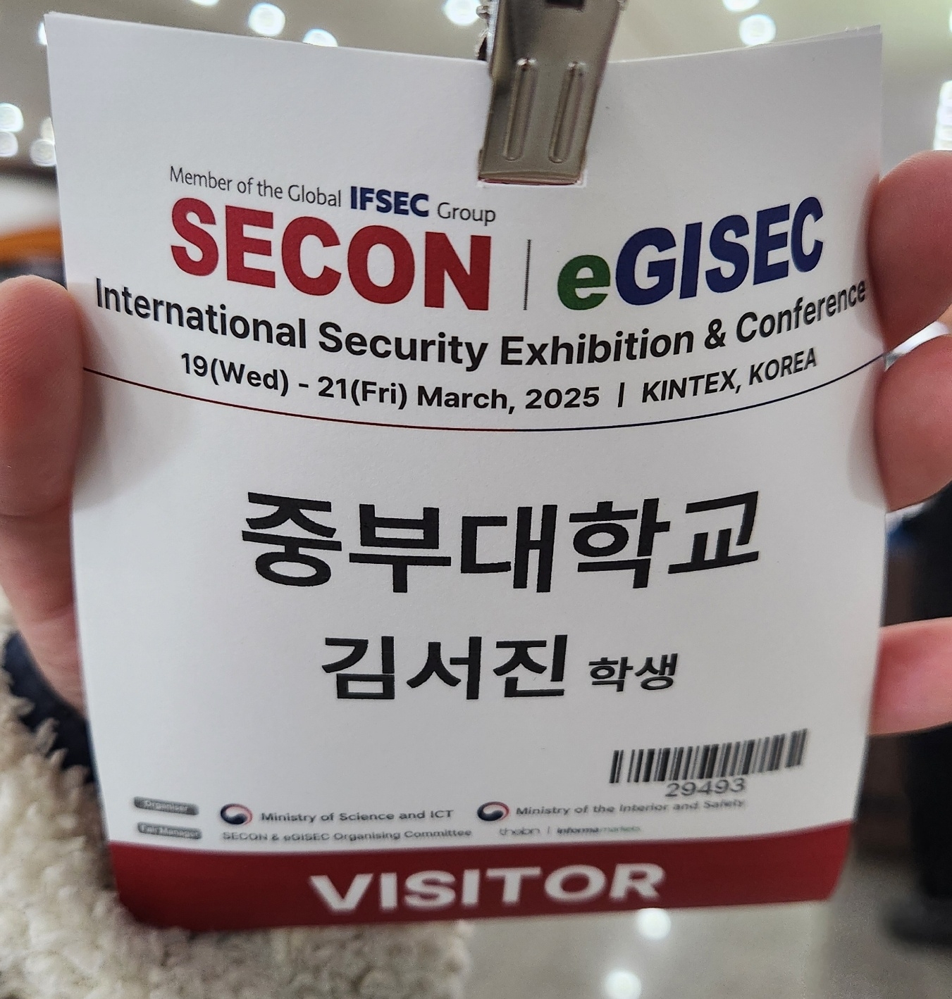
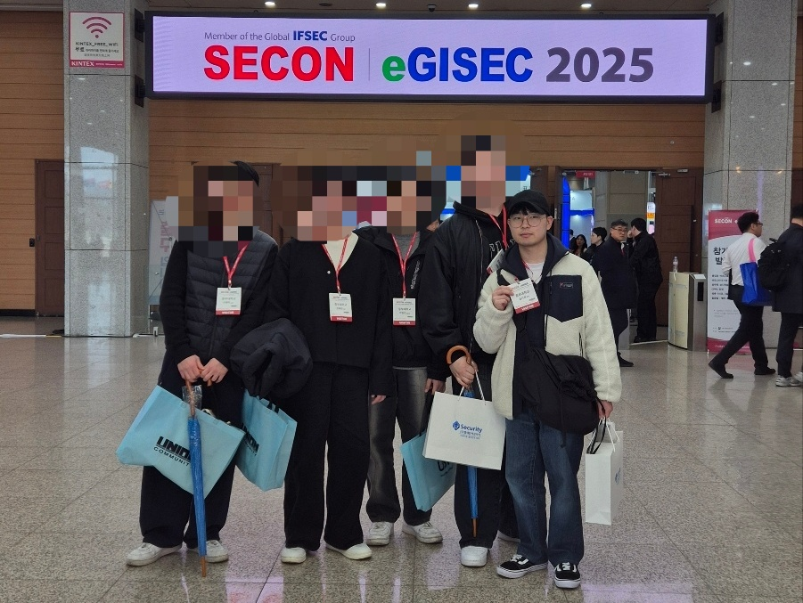
[참석 후기]
이번 2025년 제 24회 세계 보안 엑스포(SECON)에 참여하면서
22년도에 방문했을 때와는 색다른 부스들을 많이 관람할 수 있어서 좋았고
전에 방문했을 때보다 기술의 질이 훨씬 더 좋아지고 AI 발달로 인하여
기존에 있던 기술들과 융합하여 만들어진 기술들도 많아진 것 같아 흥미로웠습니다.
또한 이번 SECON에서는 기타 부스들 사진 중에서도 있었던 카메라 얼굴 인식 등 물리적 보안 기술들이
매우 많다고 느껴졌는데 추후에 알고 보니 요새는 이러한 기술이 많이 발달하고 관심이 많다는 것을 알 수 있는 등
제가 관심을 많이 가지고 있지 않던 기술들을 볼 수 있어서 정말 즐거운 시간을 가졌던 것 같습니다.
이상으로 참석 후기를 마칩니다.